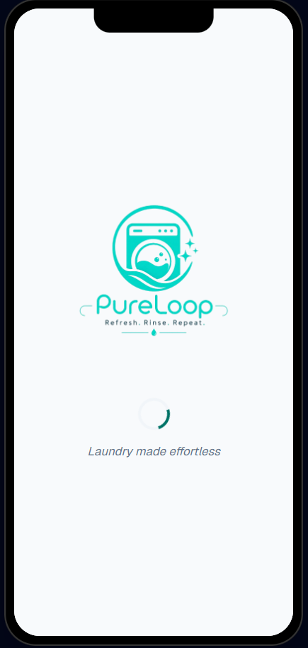
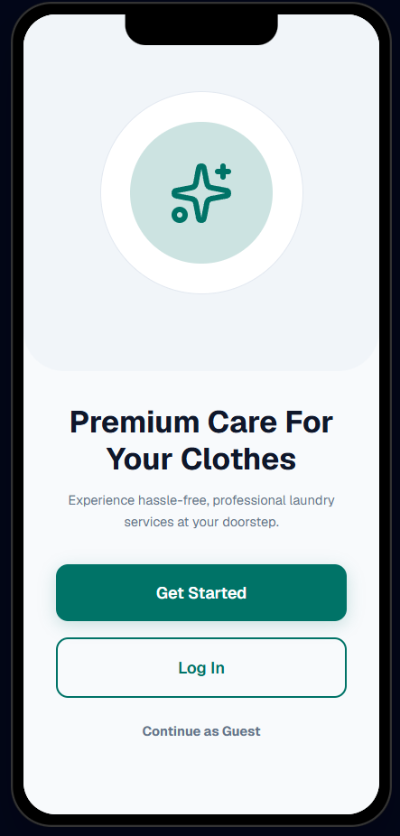
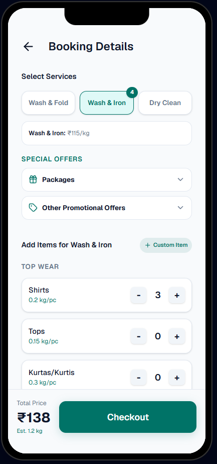
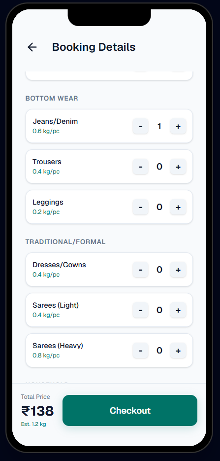
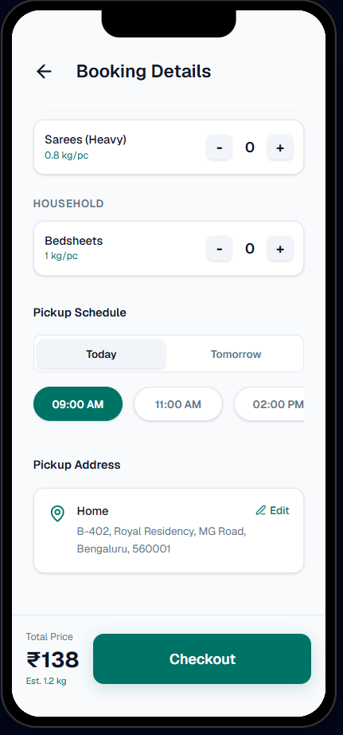
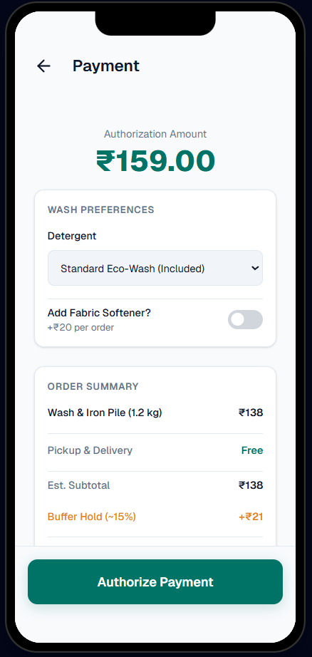
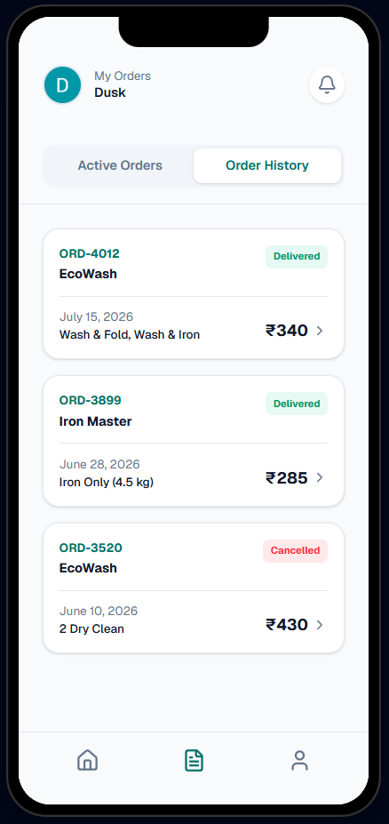
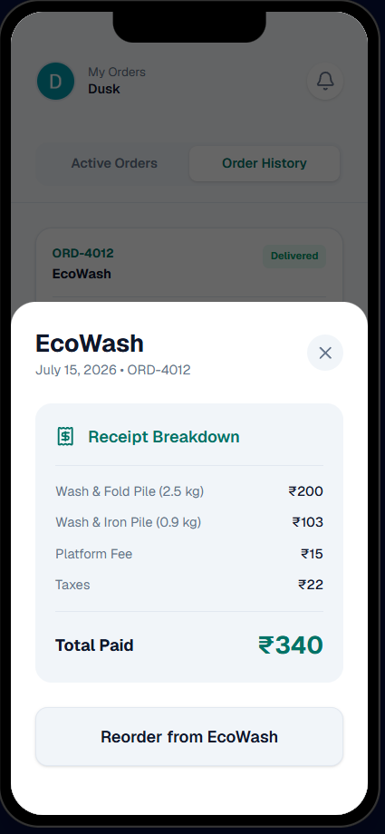

Version 2
The Live Application
The fully functional, high-fidelity live application built from the initial V1 concepts, featuring interactive state, dynamic dates, and a seamless user experience.
✨ Immersive Welcome
The redesigned, fully responsive Splash Screen and Onboarding Flow in the live app.

Dynamic Loading State

Welcome Screen
📦 Live Tracking & Payment
The updated V2 Order Completion screen and interactive Real-time Tracking Timeline featuring dynamic delivery ETAs based on your current local time.

Provider Profile

Booking Details

Wash Preferences

Schedule Pickup

Payment Screen

Live Tracking
🛍️ Contextual Booking & Order History
The brand-new Contextual Multi-Service tabs, Buffer Hold UI, and the complete unified Order History dashboard with slide-up itemized receipts.

Buffer Hold UI

Order History

Itemized Receipt